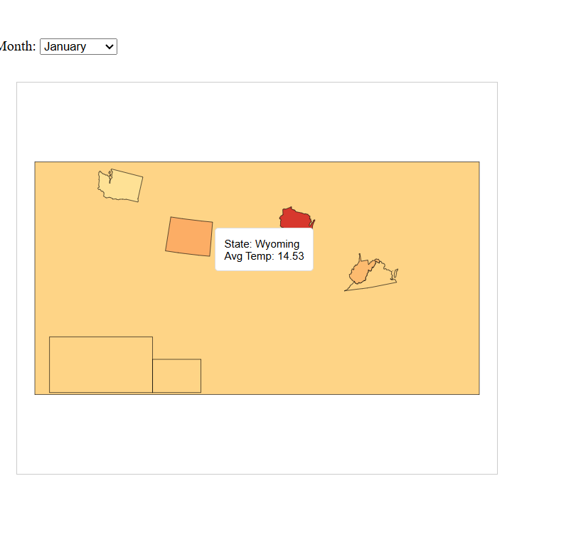

A rendering of the weather.csv dataset, exploring average temperature per month in U.S. states and territories in 2017
Choose a State:
Our dataset encompasses daily weather measurements across the United States from January to September (our dataset does not include any data beyond September), providing detailed information on weather patterns across various states. For our visualization, we chose to focus on average monthly temperatures by states in the US.
We chose a bar chart as our primary visual encoding because it is able to clearly show the comparisons between monthly temperature data and allows users to simply see trends and differences across months. We used tooltips to allow users to exactly read specific temperature values, enhancing the clarity of the visualization. Additionally, we incorporated dropdown interactions, allowing users to easily switch between states. We also added some visual effects for aesthetic purposes. A step-like visual effect was included to provide a clean transition, making the interaction more engaging and visually appealing. Also for aesthic purposes and to make the graph easy to interpret at first glance, we gave each temperature range a color, cold (0 - 55) as blue, moderate (55 - 80) as green, and hot (80+) as red.
Initially, we considered also implementing a map-based visualization to geographically represent temperature variations. However, due to our limited experience from lab sessions and challenges with clear visual representation, we decided against this approach. Considering time constraints, we pivoted to a simpler yet effective bar chart, augmented with interactive elements to maintain clarity and usability. Here is what our map looked like:
*The above map was an attempt at displaying temperature data geographically. We faced challenges rendering all the states and could only display a few, which led us to focus on the bar chart approach. (As you can see we had a tooltip as well to see exact values, and the colors would have corresponded to how hot a state is)
Throughout our development process, both Ananya and Neha evenly split the workload. Neha managed the writeup, tried the initial implementation of the choropleth map, and added the coloring for the bars. Meanwhile, Ananya focused on the initial functionality, like the bar charts, state dropdown and transitions.
Collectively, we spent approximately 8 hours on this project, with the most time-consuming aspect being the map (that we weren't able to get right :( ), and integration of interactive elements such as state selection dropdowns and smooth visual transitions. In terms of AI usage, we tried to minimize it as much as possible to learn from this project, but we used Chat GPT when calculating temperature averages and storing them efficiently within dictionary objects because of difficulty with the JavaScript syntax